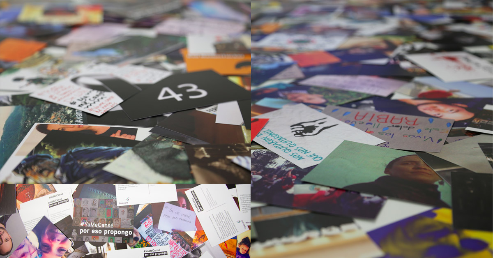

¿Por qué proponer?
La iniciativa ciudadana #YaMeCansé, #PorEsoPropongo busca hacer visible y tangible que somos muchos los que estamos atentos a la situación de violencia e impunidad en México y que no sólo estamos cansados, sino que tenemos propuestas para lograr un cambio real.
Como parte de las manifestaciones populares que han encendido las calles de México y de decenas de ciudades en el extranjero, aspiramos a registrar el sentir y las ideas de una ciudadanía que, además de exponer su indignación, mira hacia adelante, buscando alternativas para reconstruir el país después de Ayotzinapa.
Nuestra propuesta es que vayamos más allá de las expresiones en redes sociales y mandemos propuestas en forma de tarjetas postales a la sociedad civil y a representantes y servidores públicos. Por medio de la página web postcard.com/join-a-movement/15, puedes subir una imagen y escribir una propuesta, que puede ir desde lo individual y local hasta las grandes reformas que el país necesita. Las postales serán parte de la memoria sobre este momento del país pero, sobre todo, un espacio para construir algo propositivo y creativo desde la ciudadanía.
Las postales se van a imprimir y entregar en conjunto, de manera pacífica y organizada, en eventos mediáticos que generen eco a nivel global. Además, se exhibirán y se leerán en voz alta en plazas y museos de México y el mundo para hacernos escuchar. A partir de las propuestas recibidas, una comisión de ciudadanos elaborará un documento que sintetice y exponga las principales inquietudes e ideas ciudadanas, el cual se entregará junto con las postales.
¿Cómo mandar tu postal?
Utilizando la página web de Postcard* o la aplicación gratuita de Postcard iOS y Android (búscala como Postcard.com, PBC), crea una postal con una imagen y un mensaje que incluya la frase #YaMeCansé, Por Eso Propongo. La página web te va a pedir registrar un correo electrónico, que sólo se utilizará para verificar el usuario. Si prefieres no registrar tu correo, puedes usar este: poresopropongo@gmail.com.
Estos videos te lo explican en un minuto:
Si tienes problemas al momento de subir tu postal, intenta hacerlo desde una conexión con Wi-Fi, cambia de navegador o reduce el tamaño de la imagen. O mándanos tu postal y texto por correo electrónico y te ayudamos a hacerlo.
¿Cómo compartir tu postal?
Tómale una foto de pantalla antes de hacer clic en el botón de “finalizar”, o búscala en unos días en esta página: poresopropongo.mx.
Para conocer más sobre el proyecto
- Entrevista con Por Eso Propongo en W Radio
- Artículo sobre Por Eso Propongo en Letras Libres
- Artículo sobre Por Eso Propongo en CNN
Contacto
- poresopropongo.mx
- Facebook: facebook.com/poresopropongo
- Twitter: @poresopropongo
- Email: poresopropongo@gmail.com
*Postcard es una empresa de beneficio público basada en Nueva York, que nos donó el espacio y los costos de impresión para realizar este proyecto.
